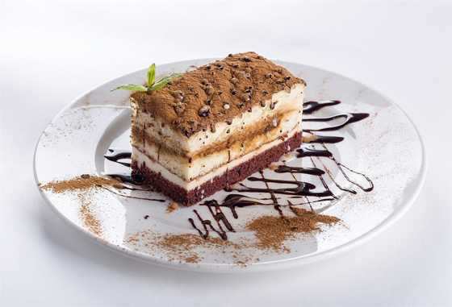
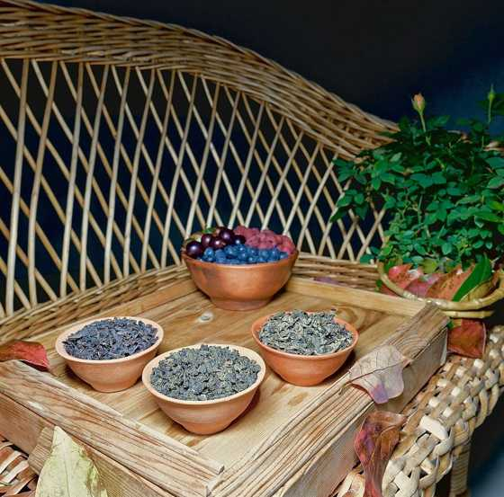

兵庫県尼崎市・神田中通
おいしいコーヒーと、
手作りのケーキを下町で。
カフェ・ド・シフォンは、コーヒーと手作りケーキでひと息つける、下町の小さなカフェです。
お店のこと
下町で、10年以上つづくカフェ。
お店のInstagramのプロフィールでは、「美味しいコーヒーと手作りケーキの下町のカフェ」と紹介されています。2018年の投稿では開店10周年を迎えたことにも触れられており、長く地域に親しまれてきたお店であることがうかがえます。
情報源: Instagram @cafe_de_chiffon
店名の由来やオーナーの想いは確認できていないため、掲載していません。「シフォン」という店名から、ふんわりやわらかな雰囲気を思い描いて色合いや言葉を選んだのは制作側のイメージです。
メニュー
コーヒーと、手作りのケーキ。
写真は雰囲気を伝えるフリー素材です。お店で提供しているものそのものではありません。




口コミ
こんなひとときを、思い描いて。
以下は制作側が作成したイメージ例です。実在のお客様の声ではありません。
仕事帰りに寄って、コーヒーとケーキでほっとひと息。やさしい時間が流れていました。
手作りのケーキが気になって、友人と待ち合わせ。のんびりおしゃべりできそうです。
下町らしい気取らない雰囲気で、ふらっと立ち寄れるのがうれしいお店です。


アクセス
ご案内
| 所在地 | 〒660-0884 兵庫県尼崎市神田中通8丁目264 |
|---|---|
| 電話 | 準備中 |
| 営業時間 | 準備中 |
| 定休日 | 準備中 |
| SNS | Instagram @cafe_de_chiffon |
営業時間・メニュー・価格は変更されることがあるため「準備中」としています。最新情報はInstagramをご覧ください。